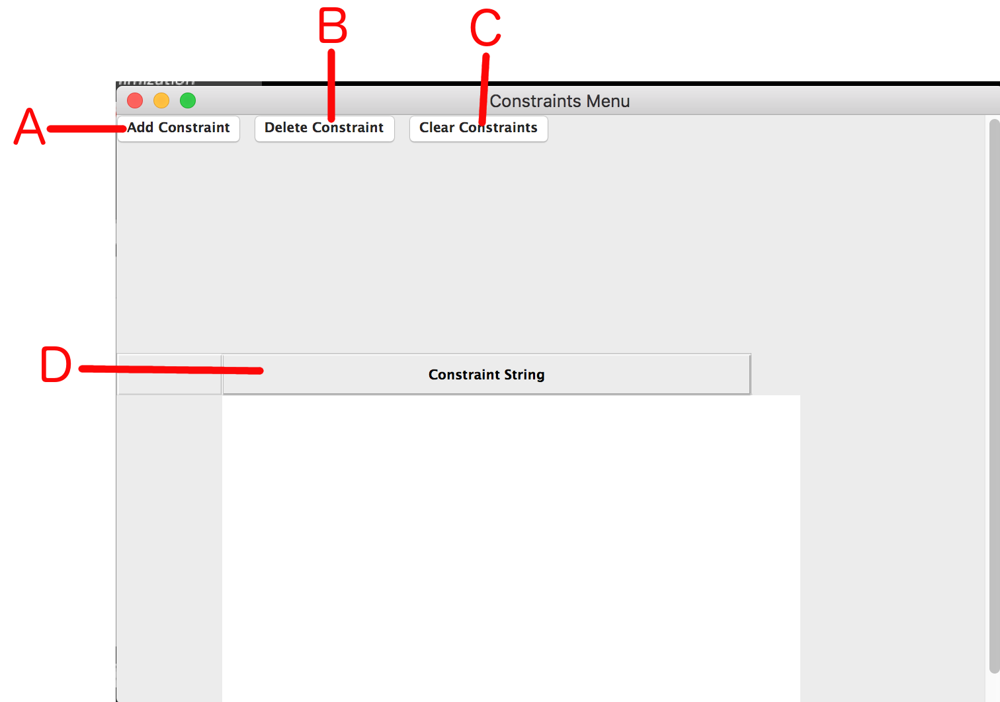
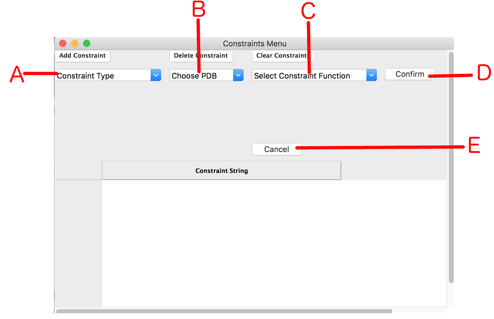
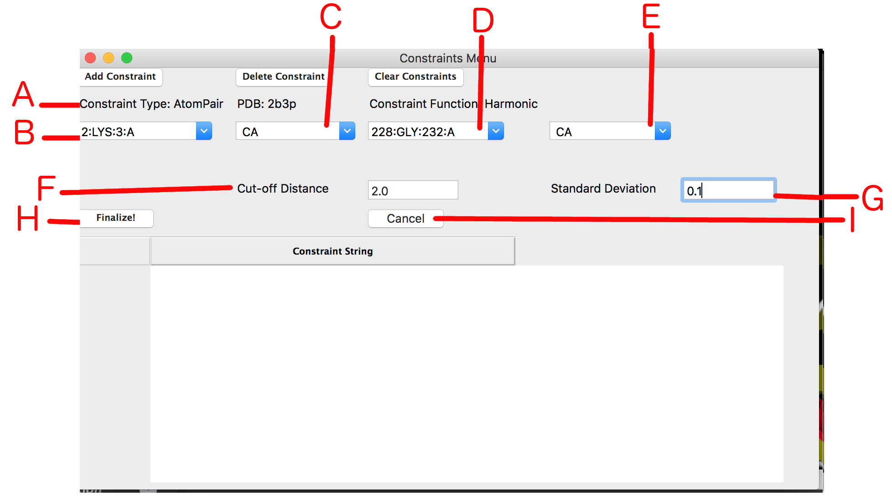
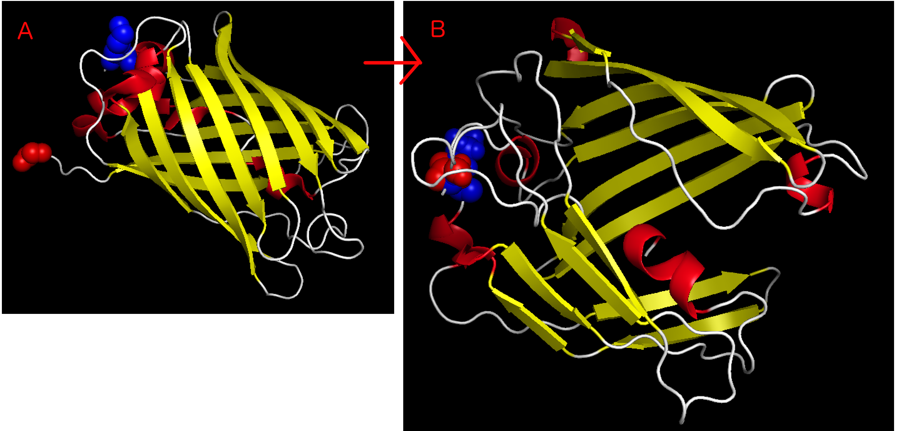

NOTE: When using constraints with energy minimization, you must first set up the minimization before adding any constraints!

Figure 1: Constraints menu at start
A: Add Constraint - Click this button to add a new constraint to the minimization after minimization has been set up.
B: Delete Constraint - Deletes the selected constraint from the minimization
C: Clear Constraints - Removes all constraints from the minimizations
D: Constraints list - All constraints currently configured for the minimization will be displayed here. Click on one to select it.

Figure 2: Constraints menu after clicking Add Constraint.
A: Constraint Type Menu - Select the desired constraint type from the drop-down menu. Available constraints are:
B: Choose PDB Menu - Select the PDB file from which this constraint will be taken.
C: Select Constraint Function Menu - Select the function with which to define the constraint. Available functions:
D: Confirm Button - Click here to confirm the constraint type, PDB, and constraint function for the current constraint.
E: Cancel Button - Click here to cancel the current constraint at any time

Figure 3: Constraints menu after confirming initial parameters
A: Initial Parameters - Parameters set in previous menu are displayed here.
B: First Residue Menu - Select the residue of the first atom in the constraint
C: First Residue Atom Menu - Select the atom of the first residue for the constraint
D: Second Residue Menu - Select the residue of the second atom in the constraint
E: Second Residue Atom Menu - Select the atom of the second residue for the constraint
NOTE: Depending on the constraint type, there may be more menus displayed
F: Cut-off Entry - Enter the cut-off (x0) for the constraint
G: Standard Deviation Entry - Enter the standard deviation (sd) for the constraint
H: Finalize Button - Click here to finalize the current constraint
I: Cancel Button - Click here to cancel the current constraint
Figure 4: Constraints menu after adding a constraint
A: New Entry in constraints list - After adding a constraint, it will appear in the list of constraints here

Figure 5: Example of energy minimization with a constraint
A: Protein before minimization - The two atoms in space-fill red and blue have an AtomPair constraint placed on them.
B: Protein after minimization - The two atoms have been brought together as a result of the constraint